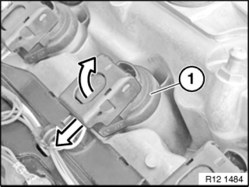
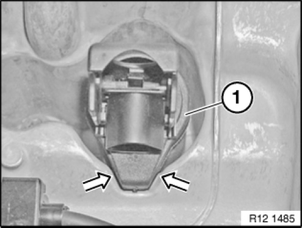
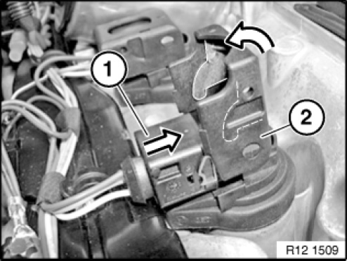
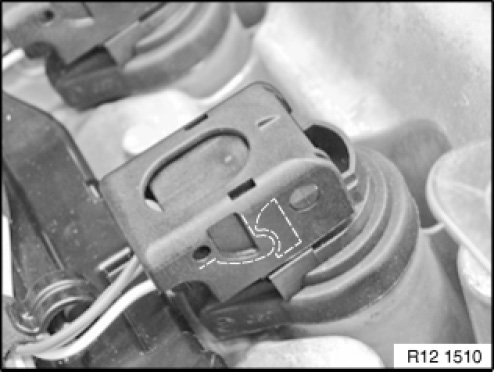

Ignition Coil: Service and Repair
12 13 511 Replacing ignition coils (N52, N52K, N51)

Necessary preliminary tasks:
- Read out fault memory of DME control unit.
- Check stored fault messages and process procedure.
- Switch off ignition
- Remove ignition coil cover

Unlock connector fastener of ignition coil (1) and disconnect connector.
Pull ignition coil (1) up and out.
This procedure is applicable to all ignition coils.

Installation note:
Check that rubber seal of ignition coil (1) is correctly seated.

Installation note:
Push connector (1) with connector fastener (2) open onto ignition coil.
Carefully close connector fastener (2) in direction of arrow.

Installation note:
The connector fastener must snap into place without great effort.

NOTE: Delete fault memory.